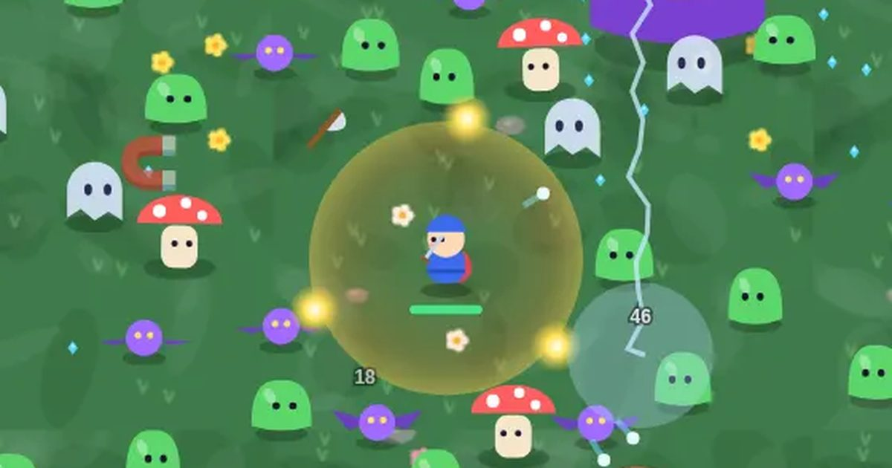

몬스터 서바이벌
Monster Survival
생존 · 자동 공격무료설치 없음폰 · PC
▶ 지금 바로 하기로그인 없이 브라우저에서 바로 시작돼요
어떤 게임인가요?
움직이기만 하세요, 공격은 무기가 알아서! 레벨업마다 3장 중 1장을 골라 나만의 조합을 만들고, 무기를 금빛으로 진화시키세요. 모은 금화로 영구 강화까지.
목표 · 몰려오는 몬스터를 쓰러뜨려 점수를 쌓으세요. 센 몬스터 · 정예 · 보스일수록 점수가 커요. 오래 버틸수록 더 많이 잡아요.
이렇게도 찾아요
서바이벌 게임자동 공격 게임생존 게임몬스터 잡기survivor gamebullet heavenauto attack survival
#서바이벌게임 #몬스터서바이벌 #로그라이크 #웹게임
게임 방법
- 움직이기만 하면 돼요. 무기는 저절로 공격해요.
- 쓰러진 몬스터가 떨군 보석을 주우면 경험치가 차요. 경험치 막대가 가득 차면 레벨 업!
- 레벨 업마다 카드 3장 중 하나를 골라요. 무기 8종 중 최대 5종까지, 각각 6레벨까지 강해져요.
- ✨ 진화: 무기가 6레벨이 되고 짝꿍 강화를 하나라도 가지면 금빛 진화 카드가 나와요. 화살+집중 → 천둥 화살비 · 구슬+가벼운 발 → 은하 고리 · 번개+힘 → 천벌 · 불꽃 고리+튼튼한 몸 → 용암 대지 · 도끼+자석 → 회오리 도끼 · 단검+행운 → 천검 · 폭탄+범위 → 대폭발 · 얼음+갑옷 → 빙하 시대.
- 1분마다 금빛 정예 몬스터가 나와요. 잡으면 보물 상자 📦 — 열면 강화(진화 포함)를 하나 더 골라요.
- 몬스터가 떨군 🪙 금화는 판이 끝나도 남아요. 대기실에서 체력 · 공격력 · 이동 속도 · 자석 · 부활 · 경험치를 영구 강화하고, 시작 무기도 해금해요.
- 90초마다 몬스터 무리가 사방에서 몰려오고, 처치 목표를 채우면 지역 보스가 나와요. 보스를 쓰러뜨려야 다음 지역으로 가요. 시간이 갈수록 돌 골렘 · 해골 궁수(화살을 쏨) · 왕슬라임(잡으면 셋으로 갈라짐)도 나와요.
- 지역 보스 다섯은 공격이 저마다 달라요 — 초원의 왕 슬라임은 뛰어올라 내려찍고, 모래 거인은 노려본 뒤 돌진하고, 얼음 군주는 탄막(맞으면 느려짐), 용암 마왕은 불기둥, 묘지의 망령왕은 순간이동해 영혼탄을 쏴요. 바닥에 빨간 원이나 띠가 보이면 그 밖으로 피하세요.
- 캐릭터 다섯(용사 · 기사 · 닌자 · 마법사 · 행운아)은 시작 능력이 달라요. 누적 처치 수로 하나씩 열려요.
- 도감: 만난 무기 · 진화 · 지역 보스 · 몬스터가 기록돼요. 새로 채울 때마다 금화 5개.
- 몬스터에 닿아 있으면 체력이 줄어요. 체력이 0이 되면 끝.
- 쓰러뜨린 몬스터만큼 점수가 기록이에요.
등장하는 것들
- 파란 보석 · 경험치 1
- 초록 보석 · 경험치 3
- 분홍 보석 · 경험치 40
- 닭다리 · 체력 +40
- 자석 · 화면의 보석을 모두 끌어옴
- 지역 보스 · 처치 목표를 채우면 등장 · 쓰러뜨리면 다음 지역
- 🪙 금화 · 영구 강화에 써요
- 📦 보물 상자 · 정예 몬스터가 떨굼 · 강화 하나 더
- 해골 궁수 · 멀리서 화살 · 피하세요
공략 팁
- 멈춰 있지 말고 크게 원을 그리며 도세요.
- 초반엔 무기 종류를 늘리고, 중반부터는 한두 개를 끝까지 키우세요.
- 보석을 먹으러 몬스터 무리에 뛰어들지 마세요. 자석 강화가 도움돼요.
- 진화 짝꿍 강화를 미리 하나씩 찍어 두면 무기가 6레벨이 되는 순간 바로 진화해요.
- 금화가 400개 모이면 부활 1회를 꼭 사 두세요.
이런 게임도 있어요
 한 획 한복한붓그리기 · 꾸미기
한 획 한복한붓그리기 · 꾸미기 두더지 팡팡반사신경 · 60초
두더지 팡팡반사신경 · 60초 돌팔매 대결턴제 · 1P/2P
돌팔매 대결턴제 · 1P/2P 단짝 줄넘기협동 · 혼자 두 손 / 둘이서
단짝 줄넘기협동 · 혼자 두 손 / 둘이서 색감 테스트관찰 · 측정 · 1분
색감 테스트관찰 · 측정 · 1분 블록 퍼즐퍼즐 · 타임어택
블록 퍼즐퍼즐 · 타임어택